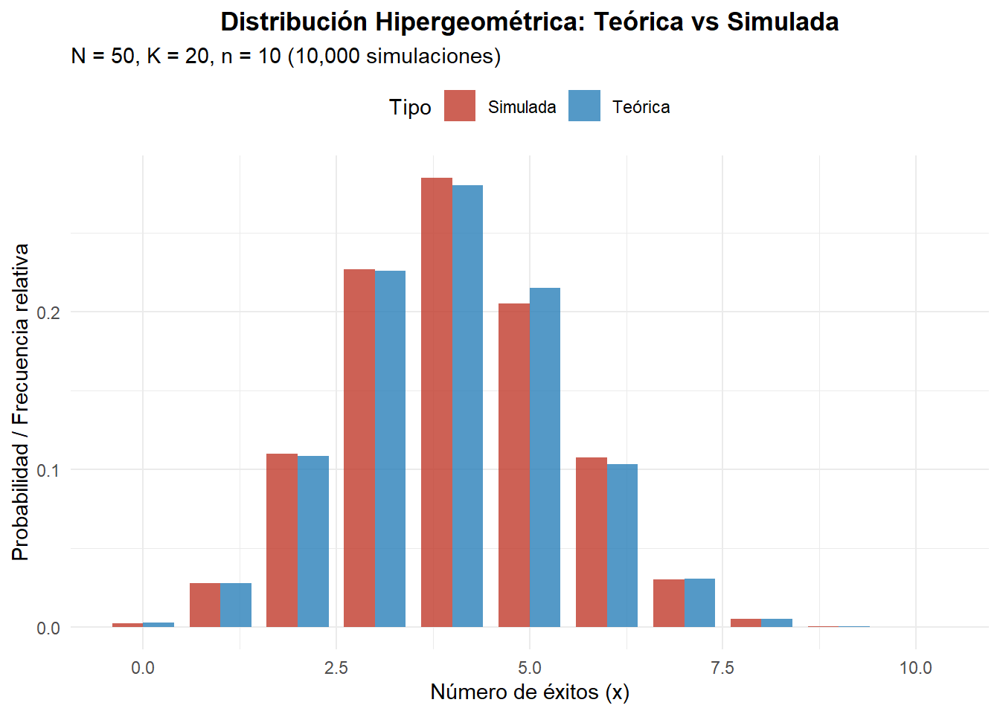
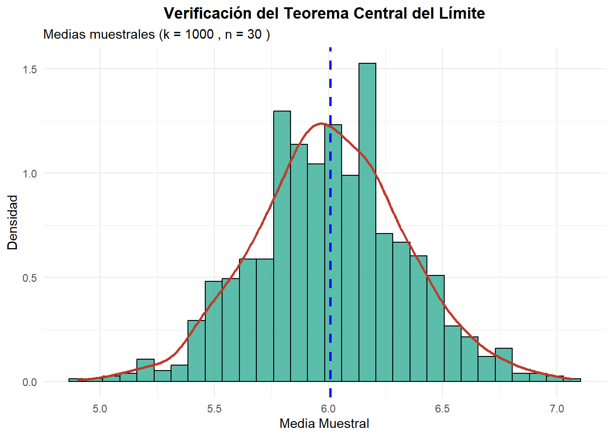

La distribución hipergeométrica es una distribución de probabilidad discreta que modela el número de éxitos en \(n\) extracciones aleatorias sin reemplazo de una población finita de tamaño \(N\) que contiene \(K\) objetos marcados como “éxitos” y \(N - K\) objetos marcados como “fracasos”.
A diferencia de la distribución binomial (que asume extracciones con reemplazo o independencia entre ensayos), la distribución hipergeométrica toma en cuenta que cada extracción altera la composición de la población restante, por lo que los ensayos no son independientes.
5.1.1 Aplicaciones Comunes
Control de calidad: Inspeccionar un lote de \(N\) artículos extrayendo una muestra de \(n\) artículos sin reemplazo para detectar artículos defectuosos.
Juegos de azar y cartas: Calcular la probabilidad de obtener un número específico de cartas ganadoras (por ejemplo, ases en póker) en una mano de naipes.
Biología y ecología: Método de captura y recaptura para estimar el tamaño de poblaciones animales.
Loterías y rifas: Probabilidad de acertar \(k\) números en un sorteo sin reemplazo (como el Melate o loterías nacionales).
5.2 Definición
Definición 5.1 Una variable aleatoria \(X\) sigue una distribución hipergeométrica con parámetros \(N\) (tamaño de la población), \(K\) (número de éxitos en la población) y \(n\) (tamaño de la muestra extraída), si su función de probabilidad está dada por:
donde: - \(N\) es el tamaño total de la población (\(N \in \mathbb{N}^+\)) - \(K\) es el número de elementos de éxito en la población (\(0 \leq K \leq N\)) - \(n\) es el número de elementos extraídos en la muestra (\(0 \leq n \leq N\)) - \(x\) es el número de éxitos observados en la muestra - Los valores posibles de \(x\) están acotados por \(\max(0, n - (N - K)) \leq x \leq \min(n, K)\).
A una variable aleatoria que sigue esta distribución se le denota como \(X \sim \text{Hipergeometrica}(N, K, n)\) (o \(H(N, K, n)\)).
5.3 Características Principales
Parámetros Estadísticos
Según Rincón (2014, pp. 243-247), los parámetros estadísticos de la distribución hipergeométrica son:
Esperanza (Media):\[E(X) = n \frac{K}{N}\] Si definimos \(p = \frac{K}{N}\) como la proporción de éxitos en la población, la media se expresa como \(E(X) = np\), análoga a la de la distribución binomial.
Varianza:\[\text{Var}(X) = n \left(\frac{K}{N}\right) \left(1 - \frac{K}{N}\right) \left(\frac{N - n}{N - 1}\right) = np(1-p)\left(\frac{N - n}{N - 1}\right)\] El término \(\frac{N - n}{N - 1}\) se conoce como el factor de corrección para población finita. Cuando \(N\) es muy grande en comparación con \(n\), este factor tiende a 1 y la varianza se aproxima a la de la distribución binomial.
Supongamos que en una urna hay \(N = 20\) esferas en total, de las cuales \(K = 7\) son rojas (éxitos) y \(13\) son azules (fracasos). Se extraen \(n = 5\) esferas al azar y sin reemplazo.
Queremos calcular: 1. La probabilidad de obtener exactamente 2 esferas rojas (\(P(X = 2)\)). 2. La probabilidad de obtener a lo más 2 esferas rojas (\(P(X \leq 2)\)). 3. La media, varianza y desviación estándar de la distribución.
Código
# ParámetrosN <-20K <-7n <-5# Soporte de xx_min <-max(0, n - (N - K))x_max <-min(n, K)x_vals <- x_min:x_max# Probabilidades usando dhyperprob_vals <-dhyper(x_vals, m = K, n = N - K, k = n)# Crear tablatabla_hiper <-data.frame(Exitos = x_vals,Probabilidad = prob_vals,Acumulada =phyper(x_vals, m = K, n = N - K, k = n))kable(tabla_hiper, caption ="Distribución Hipergeométrica (N = 20, K = 7, n = 5)",digits =4, col.names =c("Esferas Rojas (x)", "P(X = x)", "P(X ≤ x)")) |>kable_styling(bootstrap_options ="striped")
Distribución Hipergeométrica (N = 20, K = 7, n = 5)
Esferas Rojas (x)
P(X = x)
P(X ≤ x)
0
0.0830
0.0830
1
0.3228
0.4058
2
0.3874
0.7932
3
0.1761
0.9693
4
0.0293
0.9986
5
0.0014
1.0000
Código
# Cálculos específicosp_exos_2 <-dhyper(2, m = K, n = N - K, k = n)p_max_2 <-phyper(2, m = K, n = N - K, k = n)cat("\nProbabilidades de interés:\n")
Probabilidades de interés:
Código
cat("P(X = 2):", round(p_exos_2, 4), "\n")
P(X = 2): 0.3874
Código
cat("P(X ≤ 2):", round(p_max_2, 4), "\n")
P(X ≤ 2): 0.7932
Código
# Parámetros estadísticos teóricosp_prop <- K / Nmedia_teo <- n * p_propvar_teo <- n * p_prop * (1- p_prop) * ((N - n) / (N -1))sd_teo <-sqrt(var_teo)cat("\nParámetros Estadísticos Teóricos:\n")
Comparación Teórica vs Simulada (N=50, K=20, n=10)
Estadística
Teórica
Simulada
Diferencia
Media
4.0000
3.9961
0.0039
Varianza
1.9592
1.9583
0.0009
Desv. Estándar
1.3997
1.3994
0.0003
Visualización Comparativa Simulación vs Teórica
Código
x_min_s <-max(0, n_sim - (N_sim - K_sim))x_max_s <-min(n_sim, K_sim)x_s <- x_min_s:x_max_sprob_t_s <-dhyper(x_s, m = K_sim, n = N_sim - K_sim, k = n_sim)freq_s <-table(factor(sim_vals, levels = x_s))prob_obs_s <-as.numeric(freq_s) / n_repdf_comp_s <-data.frame(x =rep(x_s, 2),Probabilidad =c(prob_t_s, prob_obs_s),Tipo =rep(c("Teórica", "Simulada"), each =length(x_s)))ggplot(df_comp_s, aes(x = x, y = Probabilidad, fill = Tipo)) +geom_col(position ="dodge", alpha =0.8, width =0.8) +labs(title ="Distribución Hipergeométrica: Teórica vs Simulada",subtitle ="N = 50, K = 20, n = 10 (10,000 simulaciones)",x ="Número de éxitos (x)",y ="Probabilidad / Frecuencia relativa") +theme_minimal() +scale_fill_manual(values =c("Teórica"="#2980B9", "Simulada"="#C0392B")) +theme(plot.title =element_text(hjust =0.5, face ="bold"), legend.position ="top")

Comparación empírica vs teórica
5.7 Teorema Central del Límite
Verificamos el Teorema Central del Límite generando \(k = 1,000\) muestras de tamaño \(n_{muestra} = 30\) a partir de extracciones con parámetros adecuados.
Código
k_muestras <-1000n_tam <-30N_tcl <-200K_tcl <-80medias_hiper <-replicate(k_muestras, { muestra <-rhyper(n_tam, m = K_tcl, n = N_tcl - K_tcl, k =15)mean(muestra)})df_tcl <-data.frame(Media = medias_hiper)mu_teo <-15* (K_tcl / N_tcl)var_teo_media <- (15* (K_tcl/N_tcl) * (1- K_tcl/N_tcl) * ((N_tcl -15)/(N_tcl -1))) / n_tamggplot(df_tcl, aes(x = Media)) +geom_histogram(aes(y =after_stat(density)), bins =30, fill ="#16A085", alpha =0.7, color ="black") +geom_density(color ="#C0392B", linewidth =1) +geom_vline(xintercept =mean(medias_hiper), color ="blue", linetype ="dashed", linewidth =1) +labs(title ="Verificación del Teorema Central del Límite",subtitle =paste("Medias muestrales (k =", k_muestras, ", n =", n_tam, ")"),x ="Media Muestral",y ="Densidad") +theme_minimal() +theme(plot.title =element_text(hjust =0.5, face ="bold"))

Verificación del Teorema Central del Límite para la distribución hipergeométrica
Código
cat("Media teórica de la media:", round(mu_teo, 4), "\n")
cat("Varianza teórica de la media:", round(var_teo_media, 4), "\n")
Varianza teórica de la media: 0.1116
Código
cat("Varianza observada de la media:", round(var(medias_hiper), 4), "\n")
Varianza observada de la media: 0.1109
5.8 Ejercicios Propuestos
Ejercicio 5.1 Un lote contiene 40 componentes electrónicos, de los cuales 6 están defectuosos. Si se seleccionan 5 componentes al azar y sin reemplazo para control de calidad:
Encuentre la probabilidad de que exactamente 2 componentes estén defectuosos.
Calcule la probabilidad de que a lo sumo 1 componente esté defectuoso.
Determine la esperanza, varianza y desviación estándar del número de componentes defectuosos en la muestra.
Genere una simulación de 5,000 muestras y compare los resultados empíricos con los teóricos.
Solución desarrollada:
Código
# ParámetrosN1 <-40; K1 <-6; n1 <-5# a) P(X = 2)p_2 <-dhyper(2, m = K1, n = N1 - K1, k = n1)cat("a) P(X = 2) =", round(p_2, 4), "\n")
a) P(X = 2) = 0.1364
Código
# b) P(X ≤ 1)p_leq_1 <-phyper(1, m = K1, n = N1 - K1, k = n1)cat("b) P(X ≤ 1) =", round(p_leq_1, 4), "\n")
c) Media: 0.75 | Varianza: 0.5721 | Desv. Std: 0.7564
Código
# d) Simulación de 5,000 muestrasset.seed(42)sim1 <-rhyper(5000, m = K1, n = N1 - K1, k = n1)cat(" Media simulada:", round(mean(sim1), 4), "| Varianza simulada:", round(var(sim1), 4), "\n")
Media simulada: 0.7564 | Varianza simulada: 0.5716
Ejercicio 5.2 En un estanque hay 100 peces, de los cuales 30 fueron marcados previamente. Se captura una muestra aleatoria de 20 peces sin reemplazo.
Obtenga la probabilidad de capturar exactamente 6 peces marcados.
Verifique el Teorema Central del Límite simulando \(k = 1,000\) muestras de tamaño \(n = 25\) (con \(N=500, K=150\)) y analice la distribución de las medias muestrales.
Solución desarrollada:
Código
# a) P(X = 6) con N=100, K=30, n=20p_6 <-dhyper(6, m =30, n =70, k =20)cat("a) P(X = 6) =", round(p_6, 4), "\n")
a) P(X = 6) = 0.2141
Código
# b) Verificación TCL con N=500, K=150, n=25set.seed(123)medias_tcl2 <-replicate(1000, {mean(rhyper(25, m =150, n =350, k =30))})cat("b) Media de las medias muestrales:", round(mean(medias_tcl2), 4), "| Varianza de las medias:", round(var(medias_tcl2), 4), "\n")
b) Media de las medias muestrales: 8.9821 | Varianza de las medias: 0.2328